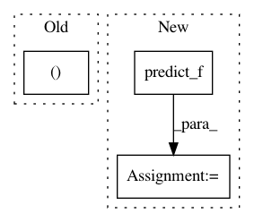

83becc8c47f9c708fbdc0b0e854b88a5ed88f3b5,testing/test_mean_functions.py,TestModelCompositionOperations,test_precedence,#TestModelCompositionOperations#,105
Before Change
def test_precedence(self):
mu1, v1 = self.m_set1.predict_f(self.Xtest)
mu2, v2 = self.m_set2.predict_f(self.Xtest)
self.failUnless(np.all(v1==v2))
self.failUnless(np.all(mu1==mu2))
After Change
mu2_lin, v2_lin = self.m_linear_set2.predict_f(self.Xtest)
mu1_const, v1_const = self.m_const_set1.predict_f(self.Xtest)
mu2_const, v2_const = self.m_const_set2.predict_f(self.Xtest)
self.failUnless(np.all(v1_lin==v1_lin))
self.failUnless(np.all(mu1_lin==mu2_lin))
In pattern: SUPERPATTERN
Frequency: 3
Non-data size: 3
Instances
Project Name: GPflow/GPflow
Commit Name: 83becc8c47f9c708fbdc0b0e854b88a5ed88f3b5
Time: 2016-04-29
Author: pleonvil@uos.de
File Name: testing/test_mean_functions.py
Class Name: TestModelCompositionOperations
Method Name: test_precedence
Project Name: GPflow/GPflow
Commit Name: 129f5beda91fb3832f058deacaaf7833027a9a26
Time: 2017-10-28
Author: art.art.v@gmail.com
File Name: testing/test_autoflow.py
Class Name: TestGPmodel
Method Name: test_predict_f
Project Name: GPflow/GPflow
Commit Name: f31a914bd38b00affc978d7ef1834e1303af5b4c
Time: 2018-09-20
Author: art.art.v@gmail.com
File Name: gpflow/models/model.py
Class Name: GPModel
Method Name: predict_y